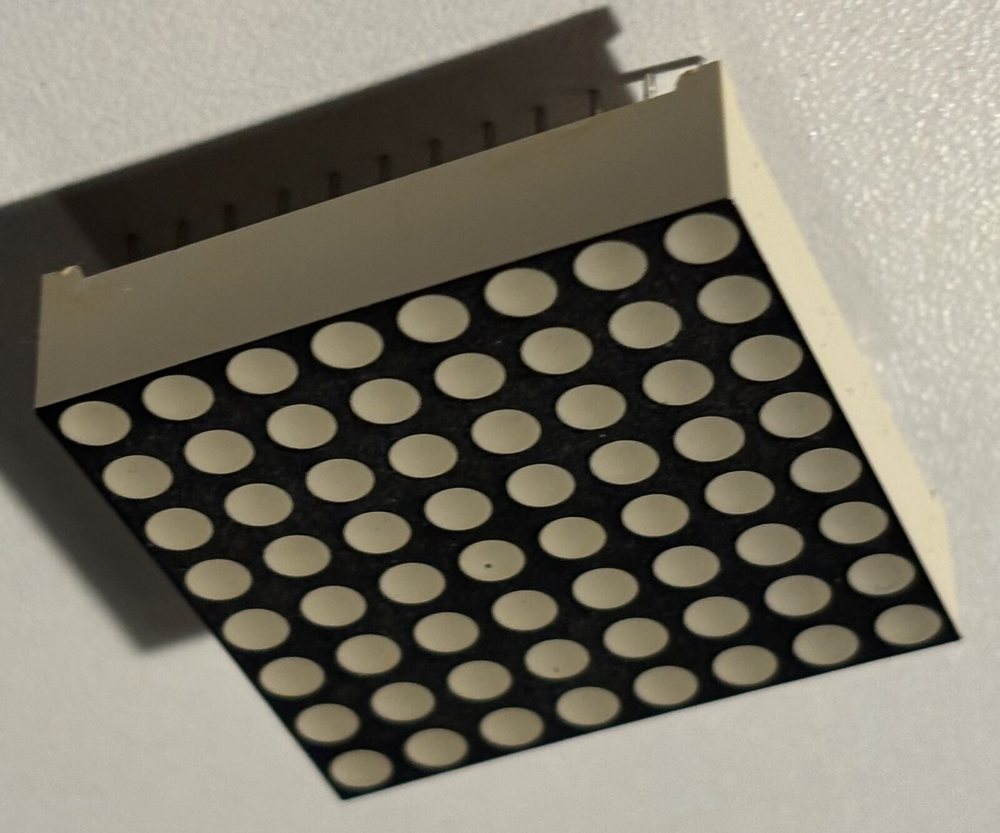
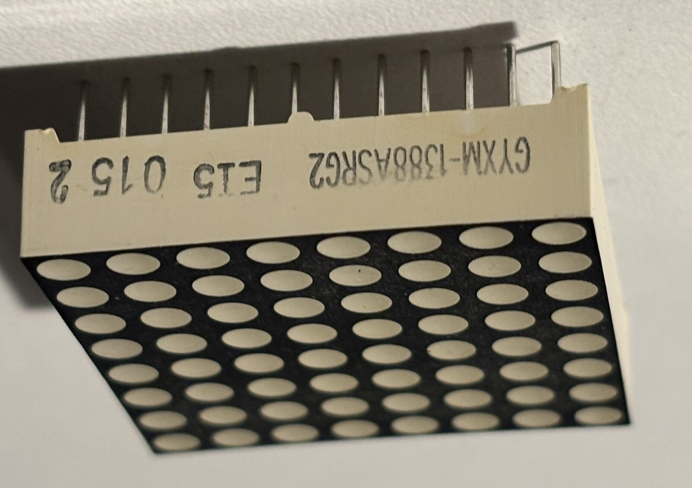

GYXM-1388ASRG2 8×8 LED dot-matrix display
untested×1A single 8×8 LED dot-matrix module, cream body with a black lens face, marked
GYXM-1388ASRG2 and E15 015 2 on the side. 64 round dots in a
square 8×8 grid — the obvious "face"/status display for the robot, driven as a
multiplexed matrix rather than 64 separate pins.
Measured (calipers, ours):
- Body 32 × 32 mm square, 8 mm tall.
- Standing on four 1 mm corner standoffs moulded into the body, so the lens face sits 9 mm above the PCB it's plugged into.
- 13.5 mm overall from lens face to pin tips — i.e. the pins run 5.5 mm below the body, 4.5 mm below the standoff feet.
- Two rows of pins on opposite edges, 12 per row (24 pins total), on what measures out as the usual 2.54 mm pitch (27.9 mm span inside a 32 mm body — confirm with calipers).
What the part number implies:
88= 8×8.RG= red/green bi-color: each dot is two dies, so the matrix needs 8 common lines + 8 red + 8 green = 24 pins. That matches the pin count exactly, and rules out this being a plain single-color module (those are 16-pin).- Red and green lit together give amber, so it's effectively a three-state display per dot without any extra wiring.
1388is the vendor's family number for this style. Note our part measures 32 mm square, not the 38 mm that number is usually attached to — trust the measurements above, not the catalogue name.- The
A/Bletter is the common-anode/common-cathode marker, but sellers use it inconsistently. Don't assume it — ring out the polarity before wiring anything. - Typical for this class of part: ~2.0 V forward on red, ~2.1 V on green, 20 mA per dot. Multiplexed 1-of-8, peak current per dot goes up and average brightness down; every column needs its own series resistor.
One corner pin is bent flat against the body in the photos — straighten it before trying to seat the part.
Driving it: a MAX7219 handles one 8×8 single-color matrix, so a bi-color panel needs two of them (or a pair of 74HC595 column drivers plus a row sink). We have neither on hand yet — bit-banging 24 lines off the Uno (C2) is not realistic, so a driver chip is a purchase this part implies.
To verify:
- Diode-test every pin pair at 3 V to build the actual pin map: which 8 pins are common, which are red, which are green, and whether the commons are anodes or cathodes
- Confirm 12+12 pins at 2.54 mm pitch and measure the row-to-row spacing — needed for both a breadboard test and any printed bezel
- Light every dot in both colors through a resistor to find dead or dim pixels (it's old stock)
- Straighten the bent corner pin
- Decide the driver (2× MAX7219 vs. shift registers) before designing a mount
- Check it clears a breadboard's center channel — a 32 mm body with pins 27.9 mm apart straddles more than the 7.6 mm gutter, so it will need flying leads or its own perfboard
{kind=link}

{kind=link}

GYXM-1388ASRG2 / E15 015 2, with the
12-pin row below it and the bent corner pin at the left.